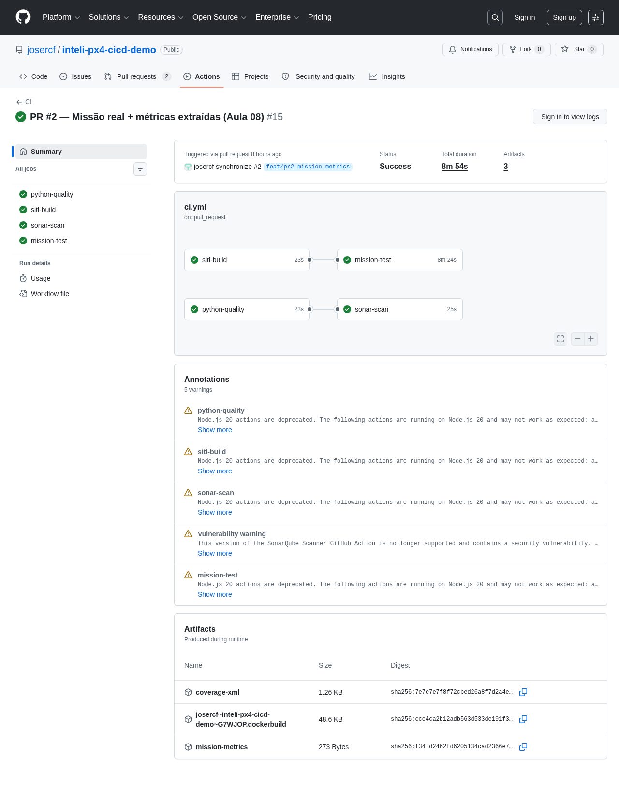
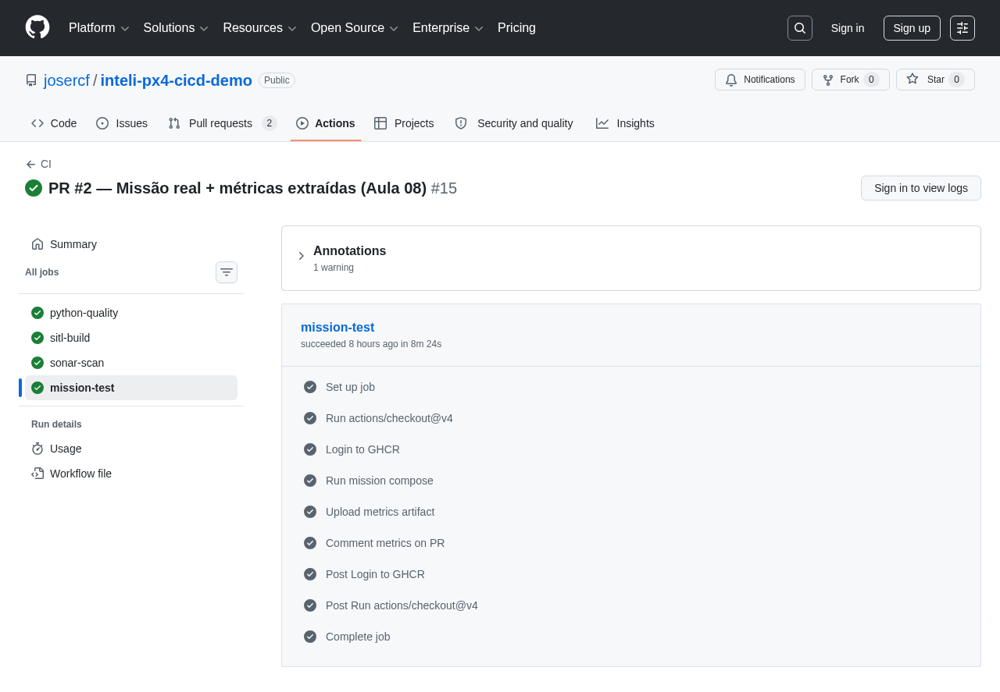
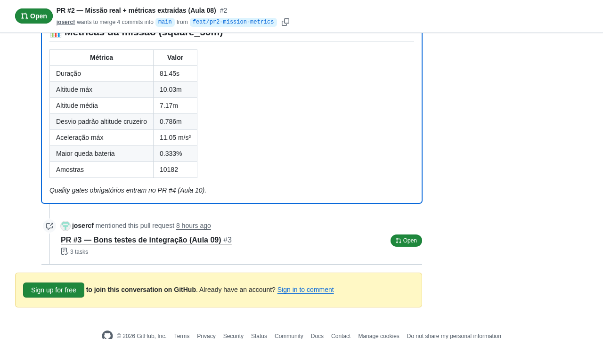

Pipeline verde já temos. Agora: o drone voou ou não? A trajetória ficou boa? Quanto custou? Hoje extraímos KPIs reais do ULog do PX4 e plugamos no pipeline.
Aula 07 fechou com pipeline verde + imagem GHCR. Hoje pegamos a saída desse pipeline (binário SITL) e extraímos métricas operacionais reais — tanto métricas de processo (DORA) quanto de domínio (drone). Walkthrough do PR #2.
| Bloco | Atividade | Duração |
|---|---|---|
| 10h00, Daily Time | Check-in: rodaram o PR #1? Esteira ficou verde no fork? | 15 min |
| 10h15, Bloco 1 | Por que medir o pipeline — DORA + métricas de domínio | 25 min |
| 10h40, Bloco 2 | ULog: como o PX4 grava + pyulog parser + KPIs | 25 min |
| 11h05, Bloco 3 | Walkthrough do PR #2 — mission-test + PR comment | 30 min |
| 11h35, Bloco 4 | Hands-on: interpretar métricas reais de um PR | 15 min |
| 11h50, Fechamento | Quiz, checklist, auto-estudo Aula 09 | 10 min |
Vocês exploraram o demo da Aula 07? Conseguiram clonar/fork? Rodaram o pipeline no próprio fork? Achado mais interessante quando abriram o PR? Uma volta rápida, uma frase por grupo.
Ao fim desta aula, cada grupo entende a diferença entre métricas de processo (DORA) e de domínio, identifica os 4 keys DORA aplicados ao demo, lê uma análise ULog e consegue interpretar a tabela de KPIs que aparece como comentário no PR.
Separar métricas de processo (DORA, "como o time entrega") de métricas de domínio ("como o produto se comporta").
Mapear os 4 keys DORA — Deployment Frequency, Lead Time, MTTR, Change Failure Rate — em sinais visíveis do pipeline do demo.
Interpretar tópicos do ULog (vehicle_local_position, vehicle_acceleration, battery_status) e os KPIs derivados.
Identificar quando uma métrica está sinalizando regressão real vs ruído normal do simulador.
Pipeline mínimo de 4 jobs: lint, sonar, build SITL, deploy-dev. Imagem PX4 publicada no GHCR a cada commit. Mas nenhuma daquelas etapas mediu o sistema rodando. Build "verde" só significa "compilou + 1 teste de heartbeat passou". Saúde real do drone é outra coisa.
Build verde é necessário. Não é suficiente. Como medir aquilo que o pipeline construiu de fato? É o tema de hoje.
Métricas de processo (como o time entrega) e métricas de domínio (como o produto se comporta). Não basta um só.
Pipeline verde diz "o build não quebrou e os testes que você escreveu passaram". Não diz nada sobre regressão de performance, energia, comportamento dinâmico. Em firmware, isso é a diferença entre passar no QA e cair em campo.
Build verde, lint verde. Mas controle de altitude oscila 1.5m mais que antes. Drone fica menos estável em vento real. Pipeline não vê.
Testes unit verdes, SAST verde. Mas missão demora 12% mais que baseline. Bateria não chega na próxima missão. Custo de operação aumenta. Pipeline não vê.
SITL conecta, drone arma. Mas aceleração instantânea durante curva chegou em 18 m/s² (limite mecânico: 15). Hardware desgasta mais rápido. Pipeline não vê.
Em vez de pedir que o dev "rode o simulador e olhe", colocamos a métrica como artefato do pipeline. Quem propõe a mudança vê o impacto medido no PR. Sem isso, todo julgamento de "está bom?" é opinativo.
DORA Research Program (Google Cloud) é o framework mais usado pra medir performance de engenharia. 4 métricas, agrupadas em duas dimensões (velocidade e estabilidade). Elite teams brilham nas 4.
Quantas vezes por semana/dia você consegue deployar. Elite: várias por dia. Nosso demo: 1× por PR mergeado.
Tempo entre commit e código em produção. Elite: <1h. Demo: ~5min (lint + build + deploy).
% de deploys que causam incidente. Elite: <15%. Demo: 0% até agora (PR #1 verde).
Tempo de detectar + corrigir um incidente. Elite: <1h. Demo: rollback via re-tag GHCR (~2min).
DORA mede o processo. Não mede se o software faz a coisa certa. Em firmware, "deployei 5× hoje" sem medir o drone voando é estatística vazia. Por isso adicionamos métricas de domínio.
DORA cuida do "como o time entrega". Métricas de domínio cuidam do "o que foi entregue se comporta como deveria". No demo de hoje, são extraídas do ULog gerado pelo PX4 durante a missão automática.
max_acceleration_m_s2 — pico de aceleração instantânea. Excede limite mecânico? Hardware desgasta mais rápido.
std_altitude_cruise_m — desvio padrão de altitude em cruzeiro. Alto = controlador instável, drone oscila visivelmente.
max_battery_drop_pct — maior queda de bateria entre amostras. Cresce → controle gastando mais energia → autonomia cai.
Cada métrica desses precisa ter baseline (valor esperado) e threshold (limite que aciona alarme). Sem isso, número é só decoração. A Aula 10 (Hermano) transforma esses thresholds em gates obrigatórios.
Onde a telemetria mora, como ler binário do PX4 em Python, e como reduzir séries temporais em KPIs do PR comment.
ULog é o formato de log binário do PX4 — extensão .ulg. Não é texto: é estruturado, com header, schema de tópicos, e arrays binários de amostras. Cada subsystema do PX4 emite seu tópico em frequência própria. Após uma missão, o arquivo tem centenas de tópicos, milhares de amostras cada.
Header → definições de tópicos (cada um vira uma "tabela") → fluxo de mensagens cronológicas. Compacto: missão de 90s gera ~2-5MB.
SITL: build/px4_sitl_default/rootfs/log/<data>/<hora>.ulg. Hardware: cartão SD do controlador. Nosso docker compose monta volume compartilhado.
Toda análise pós-voo: flight review online (logs.px4.io), nossa pipeline. Estrutura aberta — qualquer um pode parsear sem PX4 instalado.
A doc oficial do ULog format (PX4 docs) descreve o layout binário em detalhes. Para o demo, não precisamos do baixo nível — usamos pyulog, biblioteca Python que abstrai tudo.
PX4 v1.16 grava ~70 tópicos por missão. Para os 5 KPIs do PR #2, precisamos só de 3.
| Tópico ULog | Campos usados | KPI derivado |
|---|---|---|
vehicle_local_position |
timestamp (us), z (m, NED — negativo = altitude) |
mission_duration_s, max_altitude_m, mean_altitude_m, std_altitude_cruise_m |
vehicle_acceleration |
xyz[0..2] (m/s²) |
max_acceleration_m_s2 = pico do módulo √(x²+y²+z²) |
battery_status |
remaining (0.0-1.0) |
max_battery_drop_pct = maior delta consecutivo |
PX4 usa convenção NED (North-East-Down). z aponta para baixo. Drone subindo → z diminui → altitude positiva = -z. Detalhe que pega muito dev iniciante.
# tools/extract_metrics.py — trecho
from pyulog import ULog
log = ULog(str(ulog_path))
def get_topic(name: str):
for d in log.data_list:
if d.name == name:
return d
return None
pos = get_topic("vehicle_local_position")
if pos is not None:
timestamps_s = [t / 1e6 for t in pos.data["timestamp"].tolist()]
# z é NED → altitude = -z
altitudes_m = [-z for z in pos.data["z"].tolist()]
accel = get_topic("vehicle_acceleration")
if accel is not None:
xs = accel.data["xyz[0]"].tolist()
ys = accel.data["xyz[1]"].tolist()
zs = accel.data["xyz[2]"].tolist()
accel_modules = [math.sqrt(x*x + y*y + z*z)
for x, y, z in zip(xs, ys, zs)]Padrões na leitura
-z. Detalhe crítico — confundir aqui faz o KPI ficar negativo.Tópico = lista grande. KPI = um número. A redução vira política: que tipo de comportamento queremos detectar?
# compute_metrics_from_data() — coração da redução
duration = timestamps_s[-1] - timestamps_s[0]
max_alt = max(altitudes_m)
mean_alt = sum(altitudes_m) / len(altitudes_m)
# Cruise window: só amostras com altitude >= 5m
# (decolagem e pouso poluem o cálculo de estabilidade)
cruise = [a for a in altitudes_m if a >= 5.0]
std_alt_cruise = _std(cruise) # std amostral
max_accel = max(accelerations_m_s2)
# Bateria: maior queda entre amostras consecutivas
# (recuperação por ruído NAO conta)
diffs = [battery_pct[i-1] - battery_pct[i]
for i in range(1, len(battery_pct))]
max_drop = max(diffs) if diffs else 0.0Decisões escondidas em cada linha
len(timestamps) / freq — diferentes tópicos rodam em freqs diferentes.max é sensível a outlier único. Em produção real, p99 é mais robusto. Aqui usamos max pra detectar valores impossíveis.n-1, não n. Estimativa não-viesada com amostra finita.Repo, arquivos novos, job mission-test, e o comentário automático aparecendo no PR. Tudo no projetor.
PR #1 tinha 4 jobs. PR #2 mantém os 3 primeiros + substitui deploy-dev por mission-test. Esse novo job executa missão real, não só checa heartbeat.
lint + unit + coverage
análise estática
imagem GHCR
missão real + extração de KPIs no self-hosted
tabela KPI no PR via GitHub Script
Missão completa demanda PX4 + jmavsim + tester rodando ~2 min sob o mesmo network namespace. Runner GitHub-hosted pendurava no shutdown de processos Java do jmavsim. Self-hosted (VM srv-simulador) tem cleanup robusto e cache local da imagem SITL — execução fecha em ~8min ponta-a-ponta.

inteli-px4-cicd-demo/
├── libs/drone_modeling/
│ ├── geometry.py ← haversine, NED↔lat/lon, RMS error
│ └── mission.py ← load_mission(YAML) → Mission dataclass
├── missions/
│ └── square_50m.yaml ← 4 waypoints quadrado + RTL
├── tools/
│ ├── run_mission.py ← CLI MAVSDK (via mavsdk_server externo)
│ └── extract_metrics.py ← parser pyulog → metrics.json
├── tests/sitl/
│ └── test_mission_square.py ← end-to-end + thresholds baseline
├── docker/
│ └── entrypoint-tester.sh ← sobe mavsdk_server bg antes do pytest
├── docs/adrs/
│ └── ADR-007-jmavsim-no-pr2-gazebo-postponed.md
└── .github/workflows/
└── ci.yml ← novo job mission-test + PR comment
libs/ = lógica pura testável unit (geometry, mission). tools/ = CLIs orquestradores (MAVSDK, pyulog). missions/ = dados versionados. Tests unit cobrem 100% de libs/, integration tests cobrem tools/ via SITL.
tools/run_mission.py — fluxo MAVSDKasync def run(...):
m = load_mission(mission_path)
drone = System(mavsdk_server_address="127.0.0.1", port=50051)
await drone.connect(system_address="udpin://0.0.0.0:14540")
await _wait_connected(drone, timeout_s=30)
await _wait_armable(drone, timeout_s=90)
items = _build_mission_items(m)
await drone.mission.set_return_to_launch_after_mission(True)
await drone.mission.upload_mission(MissionPlan(items))
await _arm_with_retry(drone) # 5 tentativas, 3s delay
await drone.mission.start_mission()
async for progress in drone.mission.mission_progress():
if progress.current == progress.total:
return # doneLições da iteração
health.is_armable=True.set_return_to_launch_after_mission(True) faz drone voltar pra home depois do último waypoint.mission-test no ci.yml + PR commentmission-test:
needs: sitl-build
runs-on: [self-hosted, px4-sitl]
timeout-minutes: 20
environment: dev
steps:
- uses: actions/checkout@v4
- name: Run mission compose
env:
SITL_IMAGE: ghcr.io/.../px4-sitl:${{ github.sha }}
run: |
docker compose -f docker-compose.ci.yml up \
--build --abort-on-container-exit \
--exit-code-from tester --timeout 5
docker compose ... cp tester:/app/reports ./reports
docker compose ... kill
- name: Comment metrics on PR
uses: actions/github-script@v7
with:
script: |
const m = JSON.parse(fs.readFileSync('reports/metrics.json'))
await github.rest.issues.createComment({ ..., body: ... })Anatomia
reports/metrics.json do container tester pro workspace antes do down.
Após mission-test passar, esse comentário aparece automaticamente no PR. Exemplo do PR #2 do demo:

Reviewer não precisa rodar simulador local pra opinar "essa mudança degradou o controle?". Olha a tabela, compara com PR anterior, decide. Decisão de merge tem dado, não opinião.
Abre o PR #2 do demo, lê a tabela, responde 3 perguntas. Sem código, só leitura crítica.
Abra o comentário de métricas do PR #2 do demo (github.com/josercf/inteli-px4-cicd-demo/pull/2). Em duplas, respondam:
std_altitude_cruise_m está em ~0.31m. Isso é "bom" ou "ruim"? Justifique com base no comportamento esperado de um quadcopter em cruzeiro horizontal a 10m.Apresentações: 1 dupla por bloco, 60s cada. Resposta certa não existe — argumentação convincente sim.
Um time deploya 2 vezes por dia. Cada deploy leva 10 minutos do commit até produção. Quando algo quebra, leva 4 horas pra restaurar. 8% dos deploys causam incidente. Em quais dimensões DORA esse time está em padrão "Elite"?
Você quer adicionar um KPI que detecta "drone está consumindo mais bateria por metro voado" (eficiência energética). Qual combinação de tópicos ULog você usaria?
battery_status, calcular drop totalvehicle_local_position, calcular distância totalbattery_status + vehicle_local_position: bateria gasta dividida por distância 3D percorridavehicle_acceleration + battery_status: aceleração * bateria5 itens que separam "pipeline que mede" de "pipeline que adorna". Não precisa de tudo na Sprint 03, precisa saber qual está cobrindo e qual ficou para depois, com justificativa.
Reviewer vê os KPIs ANTES de aprovar. Não em dashboard separado.
DORA sozinho é incompleto. Domínio sozinho ignora processo.
Threshold = arquivo no repo, revisável via PR. Não config oral.
metrics.json upload artifact pra evolução histórica.
docker compose up roda mesma análise sem GitHub.
Itens 1, 2, 4, 5 plenamente. Item 3 (baseline thresholds versionado em quality_gates.yaml) entra na Aula 10 quando viram gates obrigatórios.
Aula 09 (Hermano Peixoto, 26/05) ataca a qualidade dos testes em si. Métricas do pipeline são úteis, mas a base é "esses testes detectam regressões reais?". Três provocações:
Robert Martin, "Clean Code", capítulo de testes. FIRST = Fast, Independent, Repeatable, Self-validating, Timely. 15 min.
Post do Martin Fowler "TestPyramid" + counter de Kent Dodds "Trophy Pattern". 25 min. Quando privilegiar unit, integration, e2e?
Talk "Eradicating Non-Determinism in Tests" (Martin Fowler) — 25 min. Como matar testes que falham aleatório.
Print do comentário de métricas do PR #2 do grupo + uma frase respondendo: "qual KPI vocês adicionariam que ainda não está no demo, e por quê?".
Aula 09, Você escreve (bons) testes de integração?, 26/05